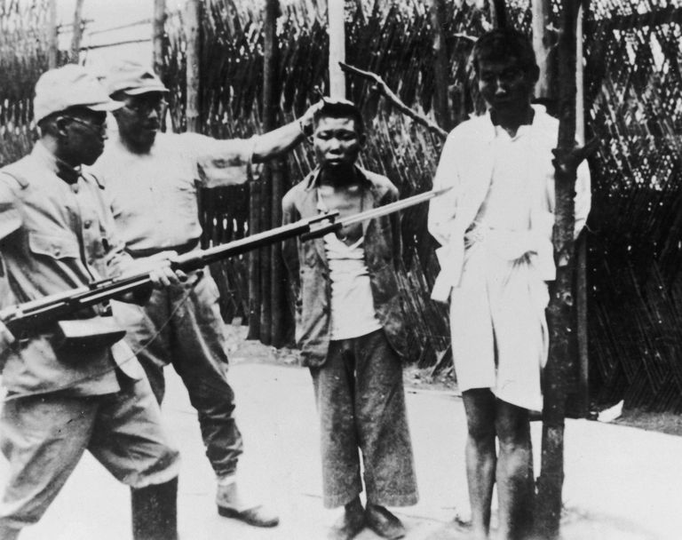
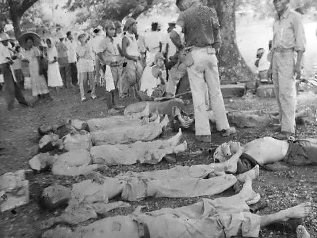

Kebijakan Tanam Paksa
Sistem tanam paksa benar-benar memeras tenaga rakyat Indonesia serta mengeruk kekayaan alam di nusantara. Banyak rakyat bumiputra menderita akibat Cultuurstelsel. Kapasitas sawah dikurangi untuk keperluan tanam paksa, rakyat dipaksa bekerja, bahkan kadang dituntut bekerja di kebun yang letaknya sampai puluhan kilometer jauhnya dari desa. Selain itu, kerja rodi juga dilakukan di bawah todongan senjata. Akibatnya, kemiskinan dan kelaparan menjalar di banyak tempa
Perbudakan di Hindia Belanda
untuk membangun Batavia selepas penaklukan, orang-orang Belanda butuh tenaga kerja. Karena itulah, VOC mendatangkan tawanan perang dan budak dari berbagai tempat, misalnya Manggarai, Bali, Sulawesi, Arakan, Bima, Benggala, Malabar, dan lainnya, demikian tercatat dalam Kisah Betawi Tempo Doeloe: Robin Hood Betawi (2001) yang ditulis Alwi Shahab.
Kerja Rodi
Salah satu kerja rodi paling terkenal yang membuat rakyat bumiputra di Indonesia sengsara adalah pembuatan jalan raya sepanjang kurang lebih 1.000 kilometer dari Anyer hingga Panarukan pada 1809.Kerja rodi massal itu dipelopori Gubernur Jenderal Herman Willem Daendels, yang menerima mandat dari Louis Napoleon, penguasa Belanda di bawah pengaruh Prancis era Napoleon Bonaparte. Daendels menerima perintah untuk mempertahankan Pulau Jawa dari serbuan Inggris. Maka itu, ia memerintahkan pembangunan jalan Anyer-Panarukan.
Upah Rendah di Perkebunan
Sejak tanam paksa dihapuskan, pemerintah Belanda menerapkan sistem Politik Pintu Terbuka (Open Door Policy). Kebijakan ini membuka Hindia-Belanda bagi pengusaha swasta-asing untuk menanamkan modal dan membuka perusahaan.Sistem Politik Pintu Terbuka ini ditandai dengan keluarnya Undang-Undang (UU) Agraria (Agrarische Wet) 1870 dan Undang-Undang Gula (Suiker Wet). Dua UU itu menjadikan Hindia Belanda pusat perkebunan penting dalam perdagangan ekonomi dunia.
